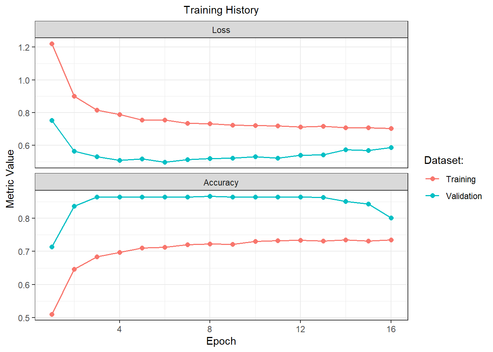
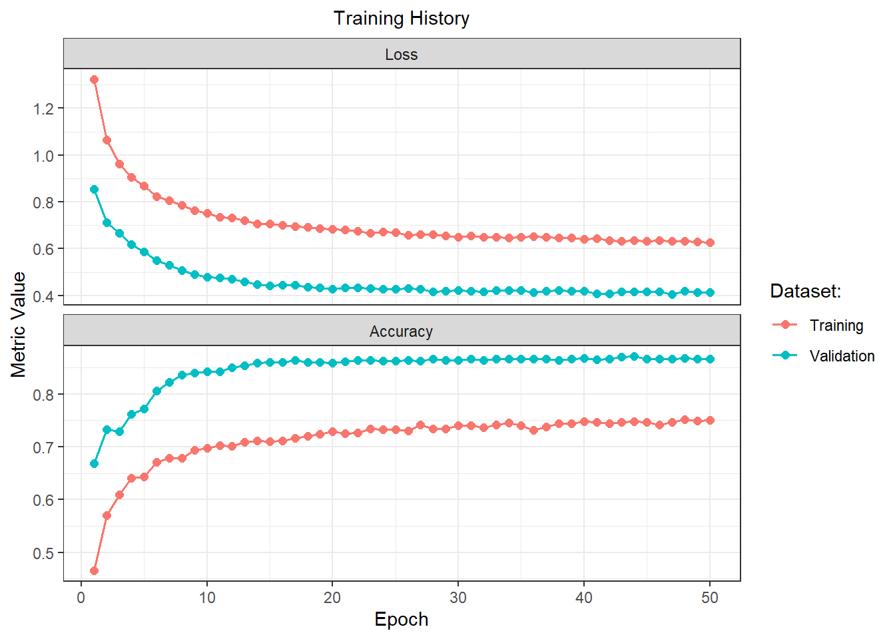

1 Abstract
This paper investigates the use of neural networks to predict observed avalanches one day in advance. The study utilizes a 15-year archive of avalanche forecasts and develops four neural network models. The first model, which incorporated all available variables, achieved an accuracy of 74.59%. However, despite this moderate performance, the model exhibited weak precision and recall for the moderate and High class, making it unsuitable for practical application. The remaining models were trained on subsets of predictors. Predictor Set 1 (Longitude:Incline) achieved an accuracy of 74,82% but suffered from poor precision and recall across moderate and high classes. Predictor Set 2 (Air.Temp:Summit.Wind.Speed) performed marginally better at 74.89%, though its precision and recall remained low for the minor classes. Predictor Set 3 (Max.Temp.Grad:Snow.Temp) obtained the highest accuracy at 75.11% from the three, yet it too was limited by weak recall and precision on the minority classes. The overall imperfectness in performance of the models is largely attributable to class imbalance in the dataset, as severe avalanche conditions were rare, leading the models to bias toward the more frequent classes. Similar challenges related to class imbalance in avalanche prediction models have been highlighted in recent work by Manish K (2024).
2 Introduction
An avalanche is when a mass of material rapidly moves down a slope. It usually happens when material breaks loose from the slope, and as it moves, it gathers more material on the way down. There are different varieties of them, namely rock, ice and debris avalanches (Karl W. Birkeland, 2025). This study aims to analyse and predict the observed avalanche hazard occurrences of ice avalanches in Scotland using Neural networks.
Avalanches pose significant risks to safety, infrastructure, and recreational activities in mountainous regions. avalanche forecasting is important for mitigating these risks. While expert forecasters combine field observations, weather data, and snowpack tests to generate daily forecasts, these methods are time intensive and heavily rely on human expertise. With the availability of a 15-year archive of avalanche forecasts from the Scottish Avalanche Information Service (SAIS), there is an opportunity to build a predictive model that can supplement expert judgement. The challenge lies in effectively using historical data, including forecast and observed avalanche hazards, geographic and topographic factors, weather variables, and snowpack integrity measures to predict avalanche hazard levels. Developing such a model can improve the consistency and efficiency of avalanche forecasts and enhance public safety in Scotland.
2.1 Study Area
2.2 Problem Statement
Avalanches in Scotland pose a significant risk to human life, infrastructure, and the environment, particularly in mountainous areas frequented by hikers, skiers, and local communities. Current avalanche forecasts rely heavily on expert judgment, which combines field observations of snow conditions, weather forecasts, and historical data. However, these forecasts can be limited by human bias, inconsistencies in data interpretation, and gaps in spatial coverage.
3 Literature Review
Avalanche hazard assessments rely on observations of avalanches, snowpack, weather and terrain they require integrating a complex array of data and evidence to produce a forecast with considerable uncertainty, Avalanche forecasters strive to minimize this uncertainty by assimilating data and evidence accumulated incrementally over time LaChapelle (1980).
Avalanche hazard forecasting has been the subject of extensive research over the years, with a range of methodological approaches developed to address the problem.On a study conducted by Hendrikx J et.al (2014) Avalanches was forecasted using classification trees, which performed relatively well due to the ability of these statistical methods to learn from data and optimize class separation through a hierarchy of decision rules.
L. Viallon-Galinier et al. (2023) conducted a study that integrated modelled snowpack stability with machine learning techniques for avalanche forecasting. The approach combined historical avalanche records with snow cover and snow stability simulations to enhance predictive performance. While the inclusion of mechanically based stability indices improved detection rates, the study also emphasized the substantial class imbalance arising from the rarity of avalanche events.It is also important to note that most statistical approaches to avalanche forecasting struggle to adequately address the issue of class imbalance arising from the rarity of avalanche events Manish K (2024)
Neural Nertworks are a result of scientific studies that aimed to study the activity of the human brain first given light to by J .William (1890) Artifitial Neural Nertworks were first introduced by Warren S. McCulloch & Walter Pitts, (1943). In 1949, Donald Hebb introduced Hebbian Learning , a straightforward learning rule for ANNs. In 1951, Marvin Minsky created the first ANN the SNARC Solver. Frank Rosenblatt developed the perceptron in 1958, which was an attempt to use neural network procedures for character recognition. Despite its success, the perceptron faced problems when it came to handling non-linearly separable data.
4 Data Description
The dataset used in this study consists of avalanche and snowpack observations collected in the Scottish Highlands. Original dataset covers a period of multiple winter seasons and contains a total of 10671 recorded observations and 34 features. Each observation corresponds to a set of environmental and snowpack measurements taken at specific locations, with associated temporal and spatial information.
The data include both numerical and categorical variables. Numerical variables capture continuous measurements such as air temperature (°C), summit air temperature (°C), altitude (m), wind speed (m/s), total snow depth (cm), snow temperature (°C), and slope incline (degrees). Several of these are directional or circular in nature, for example aspect (degrees), summit wind direction (degrees), and wind direction (degrees), which take values between 0° and 360°. Categorical variables describe snowpack characteristics and weather codes, such as precipitation code, snow crystal type, snow hardness gradients, rain at 900, and wetness categories. Spatial variables such as latitude and longitude are also included, enabling the linking of measurements to specific locations within the study area.
Before cleaning, the dataset showed irregularities such as missing values, inconsistent coding (e.g., empty strings in categorical fields), and implausible measurements like negative snow depths or unusually high wind speeds. These irregularities will be addressed during the data cleaning process.
5 Data Cleaning
5.1 Initial Screening
The raw data contained clear data quality issues, such as negative values in snowpack measurements, impossible altitude values (greater than 2000 m, while Scottish mountains are lower), or wind speeds exceeding realistic thresholds. Categorical variables also included empty strings or ambiguous encodings
Two features exhibited the highest proportion of missing values in the dataset: AV.Cat (23.37%) and Ski.Pen (22.53%). Upon inspection, AV.Cat contained numerous invalid or out-of-range codes (e.g., 8800, 5031, -9999), indicating coding errors or placeholders for missing data, so it was dropped. The Ski.Pen variable, while mostly numeric, also contained sentinel values (e.g., -1) and a substantial number of missing entries, so it too was dropped. All rows with missing values in the target variable OAH were removed to ensure model training and evaluation used only known outcomes.
5.2 Standardisation of Variable Types
Categorical variables such as Area, Drift, Rain at 900 m, and Hardness Grades were explicitly converted to factors, while ordered categories (e.g., hardness grades) were encoded with a natural ordering. Temporal information was converted into a consistent date-time format. Continuous variables (e.g., temperature, snow depth, wind speed) were retained as numeric values.
5.2.1 Sanitation of Numerical Ranges
To ensure numerical plausibility, a cleaning function was applied to replace values outside reasonable ranges with NA. For example:
Altitude values were restricted to 0–2000 m.
Aspect and wind direction values were adjusted to fall within 0–360°.
Cloud cover percentages were constrained between 0–100.
Inclination angles were limited to 0–90°.
Snow and air temperatures were bounded between -30 °C and 10 °C.
Total snow depth was capped at 1000 cm.
Wind speed values were capped at 150 mph to remove implausible outliers.
5.3 Handling Missing Values
After data sanitation, variables with significant missingness (e.g., Summit Wind Direction, Crystals, Summit Wind Speed) were carefully reviewed. Additionally, variables deemed uninformative for the analysis (such as Location, Obs and OSgrid) were dropped. Removing all rows with missing values resulted in a dataset of approximately 6,800 complete observations (from an initial ~10,600). Duplicate records were also checked for, and none were found. This reduction was expected, as cleaning removed implausible and incomplete records. Given the sufficient size of the cleaned dataset, imputation was not performed.
Exploratory Data Analysis (EDA)
The exploratory data analysis (EDA) aims to summarize the main characteristics of the dataset, uncover patterns, detect anomalies, and identify relationships between variables. This process provides insights that guide further modelling and feature engineering.
6 Univariate Exploration
6.1 Numerical Variables
A detailed five-point summary of all continuous variables is provided in the Appendix, see Table 1. Here we comment on the summary, the key ranges and any obvious anomalies. We also give a comment on the boxplots in Figure 1.
The summary of the numeric variables in the dataset reveals notable patterns in their distributions. Air temperature (Air Temp) ranges from -10.8°C to 14°C with a median of -0.4°C, indicating generally cold conditions, while altitude (Alt) spans from 113 m to 1,300 m, with most observations clustered around 920 m. Variables such as Crystals and Snow Index are highly skewed, with medians of 0, showing that most observations recorded no crystals or snow index. Other variables, including Foot Pen and Total Snow Depth, exhibit long upper tails, with extreme maximum values of 120 cm and 590 cm, respectively. Snow and wind-related variables, such as Summit Wind Speed and Wind Speed, show considerable spread, with maximums far exceeding typical values (355 mph and 110 mph, respectively), suggesting occasional extreme events. Overall, the means generally reflect the central tendency but are influenced by these extreme observations, highlighting the importance of visualizing distributions alongside summary statistics to fully understand the data.
Figure 1 shows boxplots for all numeric features in the avalanche dataset. Several variables, such as Foot Pen, Summit Wind Speed, and Total Snow Depth, exhibit extreme outliers and skewed distributions, indicating rare but significant events. Others, like Air.Temp and Incline display more symmetric distributions with fewer extreme points. Zero-inflated features such as Crystals, Max.Temp.Grad, and Snow.Index suggest frequent absence of measurements or specific avalanche conditions. The colour-coded outliers (mild vs. extreme) help highlight deviations from the typical range, which may warrant further investigation or transformation prior to modelling.
6.1.1 Outliers
Most variables have few extreme outliers based on the IQR rule. The only exceptions are the zero-inflated variables Crystals and Snow.Index. Outliers are minimal relative to the dataset size. All features will be standardized, and outliers will be reassessed in the transformed space. Overall, outliers are unlikely to significantly affect the analysis.
Note: Although correlation plots are typically presented after examining individual feature distributions, the correlation plot is shown first here for better organization and to avoid leaving large areas of white space.
6.1.2 Correlation
The correlation analysis shows that most variables are weakly correlated, with the exception of the temperature-related variables (e.g., Air.Temp, Snow.Temp, Summit.Air.Temp), which display moderate positive correlations. Notably, Air.Temp is moderately correlated with both Summit.Air.Temp (0.87) and Snow.Temp (0.67), reflecting expected temperature relationships in mountainous conditions.
6.1.3 Density of the Features
The density plots reveal diverse distributions among the numeric features. Temperature-related variables (Air.Temp and Summit.Air.Temp) display approximately symmetric or normal-like distributions. In contrast, several variables such as Foot.Pen, Summit.Wind.Speed, and Total.Snow.Depth exhibit heavy right-skewness. Features like Crystals, Insolation, and Wetness show multimodality suggesting underlying subgroups. Other features like Max.Temp.Grad and Snow Index show irregular patterns. These non-normal distributions and skewed shapes suggest the need for data transformation or standardization.
6.2 Categorical Variables
Nominal: Figure 3 above shows that observations are fairly well distributed across the six areas, with the Northern Cairngorms (21.0%) and Lochaber (19.1%) having the highest representation, while Torridon accounts for the fewest cases. For drift conditions, slightly more than half of the observations reported no drift (56.4%), while 43.6% recorded drift. Rainfall at 900 was absent in the majority of cases, with only 16.4% of observations indicating rain.
Ordinal: From Figure 4, the distribution of ordinal variables shows clear imbalances in category frequencies. Most observations fall into lower or moderate levels. For instance, Low and Moderate dominate in both FAH and OAH, while Precip.Code is heavily concentrated at 0, indicating frequent absence of precipitation.
7 Bivariate Exploration
7.1 OAH vs Quantitative Predictors
Based on Figure 5, higher OAH levels (e.g., “Considerable +” and “High”) are associated with increased values in variables such as Foot Pen, Summit Wind Speed, Total Snow Depth, and Wind Speed, suggesting deeper, and more wind-affected snow conditions contribute to avalanche risk. Additionally, looking at the temperature-related variables lower temperatures tend to be associated with higher avalanche risk.
7.2 OAH vs Qualitative Predictors
Proportional analysis reveals that lower hazard levels (“Low” and “Moderate”) dominate across all predictors, while higher hazard levels (i.e. “High” and the two “Considerable” subcategories) occur much less frequently. This imbalance in the target variable distribution should be accounted for in subsequent modelling. Additionally, the separation of the “Considerable” class into two sublevels suggests a potential need to reassess their grouping for improved interpretability.
8 Transformation and Standardisation
Transforming Circular and Spatial Variables
Several variables in the dataset, such as Aspect, Summit.Wind.Direction, and Wind.Dir, are circular in nature, meaning that their values wrap around at 360°. Standard linear treatments of such variables can be misleading, since values near 0° and 360° are numerically distant but represent almost the same orientation. To address this, each circular variable was transformed into two new features using trigonometric encoding: the sine and cosine of the angle (converted to radians). This transformation preserves the cyclic structure of the data and ensures that angular proximity is correctly represented in the feature space.
Transforming Spatial Variables
Similarly, the geographic coordinates (longitude and latitude) were projected into a planar coordinate system using an appropriate map projection. This transformation produced new features (Spatial.X and Spatial.Y) that express locations in meters rather than degrees, avoiding distortions inherent in raw geographic coordinates.
Standardisation
Because the variables are on very different scales, and neural networks are scale-sensitive, standardization is needed so that all features, specifically non-categorical ones, contribute fairly. We chose z-score scaling because it preserves relative distances and variance. Other alternatives like min–max scaling maps values to a fixed range (typically \([0,1]\)), and can compress extreme values making them appear less extreme.
9 Modelling: Neural Networks
The build_model function constructs a configurable feedforward neural network using Keras. The architecture consists of an input layer, one or more hidden layers with ReLU activation, optional dropout for regularization, and a softmax output layer. The network is compiled using the Adam optimizer with a user-specified learning rate and sparse categorical cross-entropy loss for integer-encoded multi-class targets.
The train_model function trains the network on the provided dataset with optional early stopping and model checkpointing. A portion of the training data is reserved for validation. Training parameters, such as batch size, number of epochs, and validation split, are configurable. Early stopping monitors the validation loss to prevent overfitting, while the checkpoint ensures the best-performing model is saved.
9.1 Architecture (Model Configuration)
The target variable, representing the forecast avalanche hazard level, was encoded as an ordinal categorical variable using the following class labels:
| Class Label | Meaning |
|---|---|
| 0 | Low |
| 1 | Moderate |
| 2 | Considerable − |
| 3 | Considerable + |
| 4 | High |
9.2 Model 1: Topography Model
The model has an accuracy of 74.82% when you apply (longitude:Incline)

43/43 - 1s - 707ms/epoch - 16ms/step| Class: 0 | Class: 1 | Class: 2 | Class: 3 | Class: 4 | |
|---|---|---|---|---|---|
| Sensitivity | 0.79 | 0.73 | 0.92 | 0.00 | 0.00 |
| Specificity | 0.99 | 0.86 | 0.81 | 1.00 | 1.00 |
| Precision | 0.98 | 0.70 | 0.56 | NA | NA |
| Recall | 0.79 | 0.73 | 0.92 | 0.00 | 0.00 |
| F1 | 0.88 | 0.72 | 0.70 | NA | NA |
| Prevalence | 0.41 | 0.32 | 0.21 | 0.05 | 0.01 |
| Balanced Accuracy | 0.89 | 0.79 | 0.87 | 0.50 | 0.50 |
The classification metrics across the five avalanche hazard classes reveal severe imbalance, with the model biased toward Low, Moderate, and Considerable−, while completely neglecting Considerable+ and High. Low exhibits strong detection, with sensitivity of 0.79 and specificity of 0.99, capturing most true instances while rarely misclassifying others. Precision is very high at 0.98, and balanced accuracy is 0.89, indicating reliable performance for this majority class. Moderate shows moderate detection, with sensitivity of 0.73 and specificity of 0.86. Precision drops to 0.70, and balanced accuracy of 0.79 suggests the model detects many true positives but misclassifies a notable proportion.
Considerable− achieves very high sensitivity (0.92), meaning nearly all true instances are detected. However, precision is only 0.56, reflecting frequent misclassification from other classes. Balanced accuracy is 0.87, showing decent overall detection despite noisy predictions. Considerable+ and High are entirely ignored, with sensitivity, detection rate, and detection prevalence all equal to 0. Specificity remains perfect at 1.00, but this is meaningless because the model never predicts these classes. Precision and F1-scores are undefined, and balanced accuracy defaults to 0.50, reflecting complete failure for minority classes.
The model’s accuracy of 0.75 masks severe class imbalance: while majority classes dominate predictions, the model cannot detect rare hazard levels, rendering it unreliable for comprehensive avalanche hazard assessment.
9.3 Model 2: Weather Model
The model has an accuracy of 74.90% when you apply (Air.Temp:Summit.Wind.Speed)

43/43 - 0s - 262ms/epoch - 6ms/step| Class: 0 | Class: 1 | Class: 2 | Class: 3 | Class: 4 | |
|---|---|---|---|---|---|
| Sensitivity | 0.83 | 0.74 | 0.81 | 0.06 | 0.20 |
| Specificity | 0.97 | 0.86 | 0.85 | 0.99 | 0.99 |
| Precision | 0.94 | 0.70 | 0.59 | 0.22 | 0.33 |
| Recall | 0.83 | 0.74 | 0.81 | 0.06 | 0.20 |
| F1 | 0.88 | 0.72 | 0.69 | 0.09 | 0.25 |
| Prevalence | 0.41 | 0.32 | 0.21 | 0.05 | 0.01 |
| Balanced Accuracy | 0.90 | 0.80 | 0.83 | 0.52 | 0.60 |
The classification metrics across the five avalanche hazard classes indicate some improvement for minority classes, but the model remains heavily biased toward Low, Moderate, and Considerable−. Low continues to show strong performance, with sensitivity of 0.83 and specificity of 0.97. Precision is 0.94, and balanced accuracy reaches 0.90, reflecting reliable detection of this majority class.Moderate is similarly well detected, with sensitivity 0.74, specificity 0.86, and precision 0.70. Balanced accuracy of 0.80 indicates reasonable overall performance, though some misclassifications remain.
Considerable− achieves solid sensitivity of 0.81 and specificity of 0.85, but precision is lower at 0.59, indicating that a notable fraction of predictions for this class are actually from other categories. Balanced accuracy of 0.83 shows improvement over the previous model, but predictions remain noisy. Considerable+ sees minimal improvement, with sensitivity just 0.06, specificity 0.99, and precision 0.22. Balanced accuracy of 0.52 shows the model is barely detecting this class. High also shows some gains, with sensitivity 0.20, specificity 0.99, and precision 0.33, giving a balanced accuracy of 0.60. While this represents progress compared to complete neglect in the previous iteration, detection for rare classes is still very weak and unreliable.
The accuracy remains around 0.75, similar to the previous model, but the addition of some correct predictions for Considerable+ and High demonstrates partial learning of minority classes.
9.4 Model 3: Snowpack Model
The model has an accuracy of 75.11% when you apply (Max.Temp.Grad:Snow.Temp)
43/43 - 0s - 268ms/epoch - 6ms/step| Class: 0 | Class: 1 | Class: 2 | Class: 3 | Class: 4 | |
|---|---|---|---|---|---|
| Sensitivity | 0.79 | 0.75 | 0.89 | 0.00 | 0.30 |
| Specificity | 0.98 | 0.85 | 0.84 | 1.00 | 1.00 |
| Precision | 0.97 | 0.69 | 0.59 | NA | 0.50 |
| Recall | 0.79 | 0.75 | 0.89 | 0.00 | 0.30 |
| F1 | 0.87 | 0.72 | 0.71 | NA | 0.37 |
| Prevalence | 0.41 | 0.32 | 0.21 | 0.05 | 0.01 |
| Balanced Accuracy | 0.89 | 0.80 | 0.86 | 0.50 | 0.65 |
The classification metrics across the five avalanche hazard classes show a pattern similar to previous models, with strong detection of majority classes (Low, Moderate, Considerable−) but inconsistent recognition of minority classes (Considerable+, High). Low maintains solid performance, with sensitivity of 0.79 and specificity of 0.98. Precision is very high at 0.97, and balanced accuracy reaches 0.89, indicating reliable classification of this majority class.Moderate demonstrates moderate detection, with sensitivity 0.75, specificity 0.85, and precision 0.69. Balanced accuracy of 0.80 reflects reasonable performance, although some misclassification persists.
Considerable− shows high sensitivity at 0.89 and specificity of 0.84, though precision is only 0.59, suggesting considerable confusion with other classes. Balanced accuracy of 0.86 indicates that the model reliably identifies most true instances, but errors remain.Considerable+ is completely neglected, with sensitivity and detection rate at 0.00. Specificity remains 1.00, but this is meaningless since the model never predicts this class. Precision and F1-scores are undefined, and balanced accuracy defaults to 0.50, reflecting total failure for this class.High shows some improvement compared to the previous iteration, with sensitivity 0.30, specificity 0.996, and precision 0.50. Balanced accuracy of 0.65 indicates partial detection, though the model still misses the majority of true High instances.
The accuracy is 0.75, similar to prior models. While majority classes dominate predictions and are reliably detected, minority classes remain poorly recognized.
9.5 Model 4: Full Model
The model has an accuracy of 74,59% when you apply all the predictors.
43/43 - 0s - 341ms/epoch - 8ms/step| Class: 0 | Class: 1 | Class: 2 | Class: 3 | Class: 4 | |
|---|---|---|---|---|---|
| Sensitivity | 0.82 | 0.74 | 0.78 | 0.10 | 0.40 |
| Specificity | 0.97 | 0.85 | 0.86 | 0.99 | 0.99 |
| Precision | 0.94 | 0.69 | 0.60 | 0.33 | 0.38 |
| Recall | 0.82 | 0.74 | 0.78 | 0.10 | 0.40 |
| F1 | 0.88 | 0.72 | 0.67 | 0.16 | 0.39 |
| Prevalence | 0.41 | 0.32 | 0.21 | 0.05 | 0.01 |
| Balanced Accuracy | 0.89 | 0.80 | 0.82 | 0.55 | 0.70 |
The classification metrics for the Full Model indicate persistent class imbalance, with strong performance for majority classes (Low, Moderate, Considerable−) and some improvement in detecting minority classes (Considerable+, High).Low shows robust detection, with sensitivity of 0.82, specificity 0.97, and precision 0.94. Balanced accuracy of 0.89 confirms reliable performance for this majority class.Moderate maintains moderate performance, with sensitivity 0.74, specificity 0.85, and precision 0.69. Balanced accuracy of 0.80 suggests reasonable detection, though some misclassification remains.
Considerable− demonstrates slightly lower sensitivity (0.78) compared to prior models, specificity of 0.86, and precision of 0.60. Balanced accuracy of 0.82 indicates the model can identify a majority of instances, but confusion with other classes persists. Considerable+ shows modest improvement, with sensitivity 0.10, specificity 0.99, and precision 0.33. Balanced accuracy of 0.55 indicates minimal detection of this minority class, though performance is still weak. High is detected slightly better than before, with sensitivity 0.40, specificity 0.99, and precision 0.38. Balanced accuracy of 0.70 suggests that the model is beginning to recognize rare, high-risk instances, though it still misses the majority of true cases.
The accuracy of 0.75 is comparable to earlier models. While majority classes dominate predictions and are consistently well-classified, the Full Model demonstrates only limited success in capturing minority classes. This highlights that even with all input features included, class imbalance remains a major limitation, and the model cannot reliably predict high-severity avalanche hazards.
10 Conclusion
Across all four models Model 1, Model 2, Model 3, and the Full Model the overall accuracy remains relatively stable around 0.75, the models can reliably classify the majority avalanche hazard categories (Low, Moderate, and Considerable−). Low consistently achieves the highest sensitivity, precision, and balanced accuracy, indicating that the models strongly favor this majority class. Moderate and Considerable− are detected reasonably well, though with lower precision, reflecting misclassification and confusion between these middle categories.
In contrast, the minority hazard classes—Considerable+ and High—remain challenging for all models. Sensitivity for these classes is extremely low in most cases, with some minor improvement in later models, particularly the Full Model, which achieves a sensitivity of 0.10 for Considerable+ and 0.40 for High. However, these gains are insufficient to reliably capture rare but critical hazard levels. Precision and balanced accuracy for these classes remain poor, highlighting that even when predictions are made, they are often incorrect.
The models exhibit a clear majority-class bias: strong performance for common hazard levels comes at the expense of minority classes, limiting the practical utility of these models for comprehensive avalanche hazard assessment. While inclusion of additional features in the Full Model provides slight improvements for rare classes, significant misclassification persists.
11 References
McCulloch, W.S., Pitts, W. A logical calculus of the ideas immanent in nervous activity. Bulletin of Mathematical Biophysics 5, 115–133 (1943). https://doi.org/10.1007/BF02478259
Stephens, J & Adams, E. & Huo, X & Dent, J & Hicks, J & Mccartf, D. USE OF NEURAL NETWORKS IN AVALANCHE HAZARD FORECASTING.
Bahram Choubin, Moslem Borji, Amir Mosavi, Farzaneh Sajedi-Hosseini, Vijay P. Singh,Shahaboddin Shamshirband,Snow avalanche hazard prediction using machine learning methods,Journal of Hydrology,Volume 577,2019,123929,ISSN0022-1694, https://doi.org/10.1016/j.jhydrol.2019.123929.(https://www.sciencedirect.com/science/article/pii/S0022169419306493)
Fedkin, Yevgeniy & Denissova, N.F. & Daumova, Gulzhan & Chettykbayev, Ruslan & Rakhmetullina, Saule. (2025). Avalanche Hazard Prediction in East Kazakhstan Using Ensemble Machine Learning Algorithms. Algorithms. 18. 505. 10.3390/a18080505.
Jordy Hendrikx, Matt Murphy, Terry Onslow, Classification trees as a tool for operational avalanche forecasting on the Seward Highway, Alaska, Cold Regions Science and Technology, Volume 97, 2014, Pages 113-120, ISSN 0165-232X, https://doi.org/10.1016/j.coldregions.2013.08.009. (https://www.sciencedirect.com/science/article/pii/S0165232X13001250)
Viallon-Galinier, L., Hagenmuller, P., and Eckert, N.: Combining modelled snowpack stability with machine learning to predict avalanche activity, The Cryosphere, 17, 2245–2260, https://doi.org/10.5194/tc-17-2245-2023, 2023.
Kala, Manish & Jain, Shweta & Singh, Amreek & Krishnan, Narayanan. (2024). Addressing class imbalance in avalanche forecasting. Cold Regions Science and Technology. 231. 104411. 10.1016/j.coldregions.2024.104411.
12 LLM Usage
We used the LLM to format most of the work to make it academically sound. The LLM’s performance depended on the clarity of the prompts it is given e.g If you were to ask something regarding the use of Avalanche forecasting it gives a lot of ways to do it like GIS techniques, Geophysics and other scientific ways to model it but if you are specific on what you need it performs better e.g what statistical techniques can I use? The way we understand how to use the LLM is to treat it like a child and give it simple straight foward prompts.
12.1 Example of use
12.1.1 Prompts
Write this passage in an academic manner
Be straight forward
Ensure information flow
12.1.2 Result chatGPT
We used a large language model (LLM) to format the majority of the work, ensuring it met academic standards. The performance of the LLM was highly dependent on the clarity and specificity of the prompts provided. For example, a broad prompt about avalanche forecasting yields a wide range of responses, including GIS techniques, geophysical methods, and other scientific modeling approaches. However, when prompts were specific, such as asking which statistical techniques could be applied, the LLM produced more precise and relevant outputs. Based on this experience, the most effective way to use the LLM is to provide clear, simple, and direct prompts.
13 Appendix
| Variable | Min | Q1 | Q2 | Q3 | Max | Mean | Std |
|---|---|---|---|---|---|---|---|
| Air.Temp | -10.8 | -2.2 | -0.4 | 1.7 | 14.0 | -0.2 | 3.2 |
| Alt | 113.0 | 820.0 | 920.0 | 1 045.0 | 1 300.0 | 918.9 | 158.6 |
| Cloud | 0.0 | 70.0 | 100.0 | 100.0 | 100.0 | 80.0 | 31.5 |
| Crystals | 0.0 | 0.0 | 0.0 | 0.0 | 15.0 | 1.5 | 3.2 |
| Foot.Pen | 0.0 | 5.0 | 10.0 | 20.0 | 120.0 | 14.2 | 12.2 |
| Incline | 0.0 | 23.0 | 28.0 | 32.0 | 75.0 | 27.1 | 7.7 |
| Insolation | 0.0 | 3.0 | 6.0 | 10.0 | 20.0 | 7.6 | 5.2 |
| Max.Temp.Grad | 0.0 | 0.0 | 0.4 | 1.1 | 80.0 | 0.7 | 1.7 |
| No.Settle | 0.0 | 56.0 | 124.0 | 202.0 | 560.0 | 135.6 | 95.6 |
| Snow.Index | 0.0 | 0.0 | 0.0 | 0.0 | 368.0 | 1.4 | 10.4 |
| Snow.Temp | -13.1 | -2.5 | -0.7 | 0.0 | 10.0 | -1.5 | 2.0 |
| Summit.Air.Temp | -13.4 | -3.9 | -1.9 | 0.2 | 15.0 | -1.5 | 3.3 |
| Summit.Wind.Speed | 0.0 | 15.0 | 26.0 | 38.0 | 355.0 | 28.9 | 23.1 |
| Total.Snow.Depth | 0.0 | 50.0 | 71.0 | 120.0 | 590.0 | 97.4 | 75.4 |
| Wetness | 0.0 | 1.0 | 1.0 | 2.0 | 10.0 | 1.4 | 1.2 |
| Wind.Speed | 0.0 | 8.0 | 15.0 | 20.0 | 110.0 | 15.9 | 10.4 |